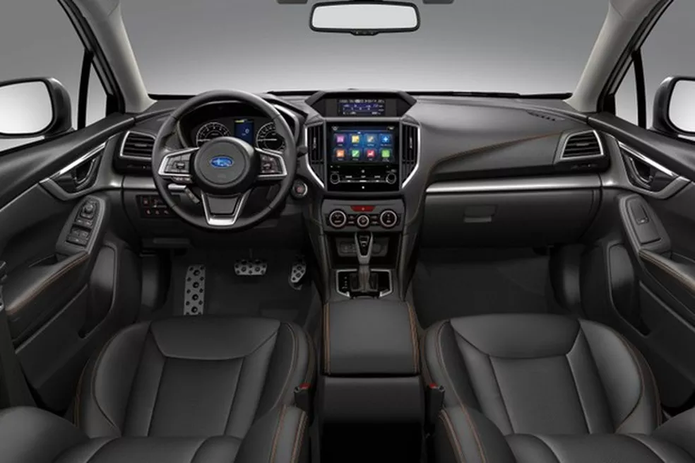
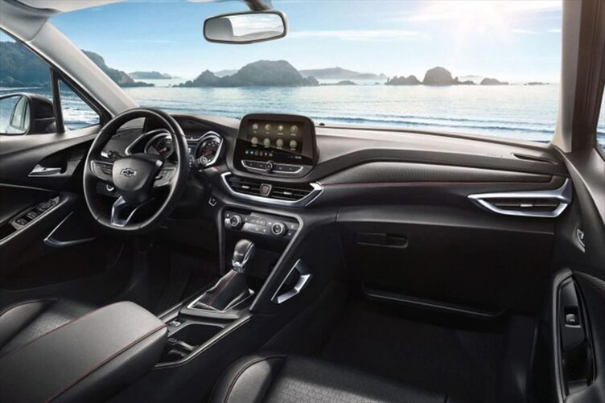

O número alarmante de acidentes de trânsito causados no Brasil devido a problemas diversos revela a
falta de segurança no país. A população demonstra uma postura irresponsável no trânsito, o que nos
distancia de um país com um tráfego seguro e exemplar.
Este projeto visa solucionar a falta de segurança no trânsito brasileiro, que é agravada pela
ausência de ferramentas online de apoio. O objetivo geral é desenvolver um WebApp chamado Steero,
que busca promover a segurança e reduzir a irresponsabilidade no trânsito.
Os objetivos específicos incluem a implementação de um velocímetro personalizado na tela do
smartphone do usuário, que fornecerá alertas sobre os limites de velocidade da via por meio do GPS.
Além disso, o aplicativo será integrado a outras plataformas utilizadas por motoristas de
aplicativos. Como um projeto futuro, planeja-se limitar a velocidade dos veículos de forma
automática, ajustando-os aos limites propostos pela via e tornando o trânsito mais seguro para os
usuários do aplicativo.
A justificativa para o desenvolvimento do aplicativo baseia-se no fato de que atualmente os veículos
com recursos semelhantes, que proporcionam uma experiência consideravelmente mais segura, possuem um
preço extremamente elevado. Por exemplo, o carro da empresa de Elon Musk, o Tesla, nativamente
possui a função de identificar a velocidade da via e ajustar o veículo automaticamente. No entanto,
o alto custo de um Tesla, cerca de R$900.000, torna essa função inacessível para grande parte do
público.
De acordo com o IPEA (Instituto de Pesquisa Econômica Aplicada), os acidentes de trânsito no Brasil
resultam em aproximadamente 45 mil mortes anuais e um custo econômico de R$50 bilhões. Isso
demonstra que o problema não se restringe apenas ao aspecto social, mas também causa impactos
econômicos significativos.
O público-alvo desse trabalho consiste, principalmente, em pessoas que recentemente obtiveram sua
carteira de habilitação. Isso pode contribuir para o desenvolvimento de uma consciência maior no
trânsito, evitando multas e infrações que poderiam resultar na perda da carteira provisória. Além
disso, o aplicativo também visa auxiliar os idosos, compreendendo suas limitações decorrentes da
idade avançada. No entanto, qualquer pessoa que deseje obter maior segurança e apoio no trânsito
poderá utilizar o aplicativo.

